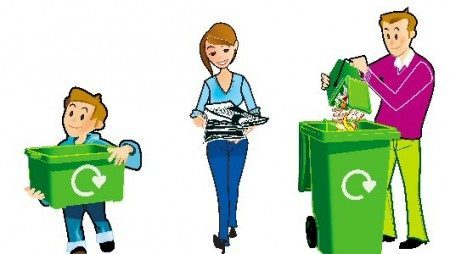

La contaminación es la introducción de sustancias u otros elementos físicos en un medio que provocan que éste sea inseguro o no apto para su uso.1 El medio puede ser un ecosistema, un medio físico o un ser vivo. El contaminante puede ser una sustancia química, energía (como sonido, calor, luz o radiactividad). Es siempre una alteración negativa del estado natural del medio, y por lo general, se genera como consecuencia de la actividad humana considerándose una forma de impacto ambiental. La contaminación puede clasificarse según el tipo de fuente de donde proviene, o por la forma de contaminante que emite o medio que contamina. Existen muchos agentes contaminantes entre ellos las sustancias químicas (como plaguicidas, cianuro, herbicidas y otros.), los residuos urbanos, el petróleo, o las radiaciones ionizantes. Todos estos pueden producir enfermedades, daños en los ecosistemas o el medioambiente. Además existen muchos contaminantes gaseosos que juegan un papel importante en diferentes fenómenos atmosféricos, como la generación de lluvia ácida, el debilitamiento de la capa de ozono, y el cambio climático.


El reciclaje es un proceso cuyo objetivo es convertir desechos en nuevos productos o en materia para su posterior utilización. Gracias al reciclaje se previene el desuso de materiales potencialmente útiles, se reduce el consumo de nueva materia prima, además de reducir el uso de energía, la contaminación del aire (a través de la incineración) y del agua (a través de los vertederos), así como también disminuir las emisiones de gases de efecto invernadero en comparación con la producción de plásticos. El reciclaje es un componente clave en la reducción de desechos contemporáneos y es el segundo componente de las 3R («Reducir, Reciclar y Reutilizar»). Los materiales reciclables son muchos, e incluyen todo el papel y cartón, el vidrio, los metales ferrosos y no ferrosos, algunos plásticos, telas y textiles, maderas y componentes electrónicos. En otros casos no es posible llevar a cabo un reciclaje debido a la dificultad técnica o alto coste del proceso, de modo que suele reutilizarse el material o los productos para producir otros materiales y se destinan a otras finalidades, como el aprovechamiento energético. También es posible realizar un salvamento de componentes de ciertos productos complejos, ya sea por su valor intrínseco o por su naturaleza peligrosa.

 1
1